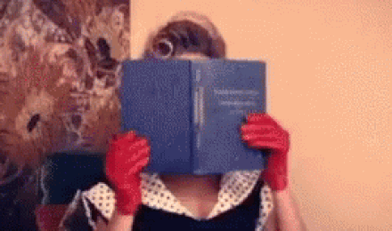

Criatividade
O substantivo criatividade se baseia no adjetivo criativo, localizando em ambos os casos a raiz sobre o latim creāre, que se refere a formar, produzir e logicamente criar, acompanhado pelos sufixos -īvus e -tas. É um termo que aparece em todos os tipos de áreas e disciplinas, mas de maneira única nas atividades
Dicas
Diferentes referencias  Leia livros, veja filmes, ouça podcastsMexa-se
 Exercícios, caminhar, meditar
Exercícios, caminhar, meditar